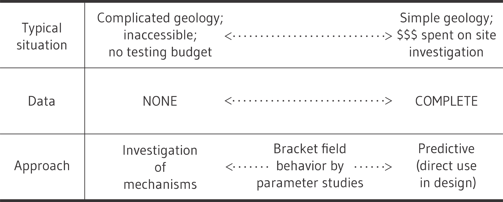

总体方法
岩土工程等力学过程的建模，涉及特殊的考虑事项和与人工材料设计不同的设计理念。例如，在岩石和土体之中或之上进行结构和开挖的分析与设计时，必须在相对较少的场地特定数据下完成，并且要意识到变形性和强度属性可能存在很大变化。在岩石或土体场地上不可能获得完整的现场数据；应力、属性和不连续面的信息最多只能部分已知。
这种困境也出现在岩土工程以外的其他领域的应用中，无论所采用的数值方法属于连续介质方法还是离散单元方法。 上一行是为尝试把非岩土领域与离散元法联系起来而补充的内容 例如，在粉体技术中，高堆积密度下的接触行为通常是未知的。在散体物料流动中，流动物料内不规则性分布对流动的影响难以量化。在这类情况下，当设计预测所需的输入数据有限时，数值模型应主要用于理解影响被模拟系统行为的主要机制。一旦理解了系统的行为，就适合为设计过程建立简单的计算。
这种方法面向数据严重不足的工程应用。在其他应用中，如果有足够的数据以及对材料行为的理解，则可以直接使用数值模拟软件进行设计。在任何领域，建模者都应认识到情形存在一个连续的谱系。下图说明了岩土工程这一特定领域中该谱系的样子。


图 1：建模情形的谱系。
Itasca 程序既可以用于完全预测模式（图中右侧），也可以作为检验想法的“数值实验室”（图中左侧）。决定使用方式的是现场情况（以及预算），而不是程序本身。如果有足够的高质量数据，软件可以给出良好的预测。
由于许多应用都会涉及数据很少的情形，以下讨论列出了推荐方法，把数值模型视为针对岩土工程问题的实验室试验来对待——不过，通过类比也可容易地确定其他领域问题的处理方法。再次说明，这是前述为纳入非岩土领域内容所作的尝试绝不应把模型视为一个“黑箱”，一端输入数据，另一端就产生行为预测。数值“试样”必须仔细准备，并测试若干试样，以获得对问题的理解。[原先这里后面还有一句，但应删除：下表列出了成功进行数值试验所推荐的步骤；下文讨论将逐一处理每个步骤。] [PFC 省略了整段，但我认为应按下述修改后保留]
| 步骤 1 | 确定模型分析的目标。 |
| 步骤 2 | 建立物理系统的概念图景。 |
| 步骤 3 | 构建并运行简单的理想化模型。 |
| 步骤 4 | 汇集问题专用数据。 |
| 步骤 5 | 准备一系列详细模型计算。 |
| 步骤 6 | 执行模型计算。 |
| 步骤 7 | 呈现结果以供解释。 |
步骤 1：确定模型分析的目标
模型中所包含的详细程度往往取决于分析目的。例如，如果目的是在两种相互冲突的、被提出来解释系统行为的机制之间做出取舍，那么只要所构建的粗略模型能够让这些机制发生即可。人们很容易因为现实中存在复杂性就在模型中纳入复杂性。然而，如果这些复杂特征对模型响应影响很小，或者与模型目的无关，就应将其省略。从全局出发，仅在必要时再逐步细化。
步骤 2：建立物理系统的概念图景
重要的是建立问题的概念图景，以便对给定条件下的预期行为做出初步估计。在准备这一图景时，应提出若干问题。例如：预计系统可能变得不稳定吗？主要的力学响应是线性的还是非线性的？与问题区域内物体的尺寸相比，预计位移是大还是小？是否存在可能影响行为的明确不连续面，还是材料基本上表现为连续介质？系统是否与流体发生相互作用？系统是由物理结构限制，还是其边界延伸到无限远？系统的物理结构是否存在任何几何对称性？
这些考虑将决定数值模型的总体特征，例如模型几何形状的设计（FLAC3D 或 3DEC）或颗粒集合体的设计（PFC）、材料模型（FLAC3D 或 3DEC）或接触模型的类型、边界条件以及分析的初始平衡状态。它们将决定是否需要三维模型，或者能否使用二维模型以利用物理系统中的对称性或其他几何条件。
步骤 3：构建并运行简单的理想化模型
在对物理系统进行数值分析理想化时，先构建并运行简单的试验模型、然后再建立详细模型，效率更高。应在项目尽可能早的阶段创建简单模型，以同时产生数据和对系统的理解。其结果可以进一步加深对系统概念图景的认识；在运行简单模型之后，可能需要重复步骤 2。
简单模型可以揭示在投入大量分析工作之前就能弥补的缺陷。例如，所选材料模型或接触模型能否充分代表预期行为？边界条件是否影响模型响应？简单模型的结果还可以通过识别数据类型以及哪些参数对分析影响最大，来帮助指导数据采集计划。
在 PFC 中，与 FLAC3D 这类连续介质程序不同，颗粒生成、边界条件和初始条件相互关联。为达到分析所需的初始状态，可能需要进行多次模型计算。最好先在简单模型上完成这一工作，然后再进行详细的模型计算。
步骤 4：汇集问题专用数据
模型分析所需的数据类型包括以下几类：
- 几何细节（例如地下洞室剖面、地表地形、坝体剖面、岩/土结构）；
- 地质构造的位置（例如断层、层理面、节理组）；
- 材料行为（例如弹/塑性属性、破坏后行为）；
- 初始条件（例如地应力状态、孔隙压力、饱和度）；以及
- 外部荷载（例如爆炸荷载、加压洞室）。
由于具体条件通常存在很大的不确定性（特别是应力状态、变形性和强度属性），必须为研究选择合理的参数范围。步骤 3 中简单模型计算的结果往往有助于确定这一范围，并为设计采集所需数据的室内和现场试验提供思路。
步骤 5：准备一系列详细模型计算
大多数情况下，数值分析会涉及一系列计算机模拟，这些模拟涵盖所研究的不同机制，并覆盖由所汇集数据库推导出的参数范围。为计算准备一组模型计算时，应考虑以下几个方面：
- 每次模型计算需要多少时间？如果模型运行时间过长，可能难以获得足够信息以得出有用的结论。应考虑在多台计算机上并行进行参数变化计算，以缩短总计算时间。
- 应在若干中间阶段保存模型状态，这样就不必为每个参数变化重复整个计算。例如，如果分析涉及多个加载/卸载阶段，用户应能够返回到任一阶段，修改参数，并从该阶段继续分析。还应考虑保存文件所需的磁盘空间。
- 模型中的监测点数量是否足够，以便清晰解释模型结果并与实际数据比较？在模型中设置若干测点，在计算过程中监测某一参数（如位移、速度、力或应力）的变化记录，会很有帮助。此外，应始终监测模型中的最大不平衡力，以检查分析各阶段的平衡状态或破坏/流动状态 破坏 = flac3d；流动状态 = pfc。
步骤 6：执行模型计算
最好先单独进行一两次详细模型计算，然后再启动一系列计算。这些计算应被中断并间歇性地检查，或在每个阶段检查， 间歇性 = pfc，每个状态 = flac3d以确保响应符合预期。一旦确信模型运行正常，就可以将若干模型数据文件链接起来，依次执行多个计算。在计算序列进行过程中的任何时刻，都应能够中断计算、查看结果，然后酌情继续或修改模型。
步骤 7：呈现结果以供解释
问题求解的最后一个阶段是呈现结果，以便清晰地解释分析。最好以图形方式显示结果。[删除这段，它原本是上一句的结尾：，可直接显示在计算机屏幕上，或输出到硬拷贝绘图设备。]图形输出应以便于直接与现场量测和观测结果比较的格式呈现。图件应清楚标识分析中关注的区域，例如计算得到的应力集中位置，或者模型中稳定运动区与不稳定运动区。模型中任何变量的数值也应便于取用，以便建模者进行更详细的解释。
这七个步骤描述了任何数值建模过程的有效流程。我们自己的软件咨询工作通常都沿这一顺序推进；出现例外或省略其中某一步的情况很少见。
我们建议遵循这七个步骤来高效地解决岩土工程问题。以下各节描述如何应用 |flac3d| 来满足该建模方法中每个步骤的具体要求。 这原本是 FLAC3D 部分的最后一行，但它过于针对 FLAC3D 和岩土工程。
| 这些内容对您有帮助吗？… 版权与免责声明 |
FLAC3D © 2019, Itasca | 原文更新于 2020 年 10 月 8 日 |